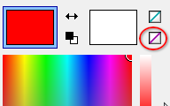
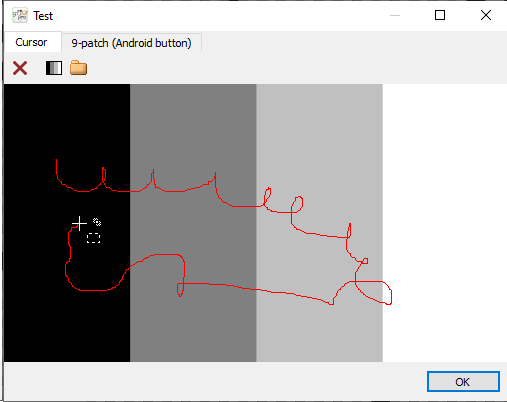
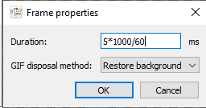

Windows cursors
Introduction
Windows cursors are similar to icons in that:
- They can contain multiple small images called pages depicting the same thing, differing in size and/or color depth.
- The .cur file format is almost the same as .ico, with some minor differences.
But cursors also differ from icons in that:
- They only have a few pages. 32x32 is required, 48x48 and 64x64 (for high-resolution screens) are optional.
- These pages come in only one color depth that is usually 1-bit or 32-bit.
- Each page has a hot spot, which is a special pixel where the clicking occurs. This can be set with the Hot spot (H) tool.
- A special "color" called inverted is supported. This allows the pointer to be visible over almost any background. Inverted parts will look black over a white background, and white over a black background. You can select the inverted color for drawing with the button in the color picker panel:

- Cursors can be animated but then they have to be saved in .ani file format.
For some examples, look at C:\Windows\Cursors. Load and examine them in Greenfish Icon Editor Pro.
Testing your cursor
Follow the steps described here, i.e. press Ctrl+Shift+T to open the Test window.
You can also draw on the test background with your cursor:

Animated cursors
- Static cursors are stored in .cur files. Animated cursors are stored in .ani files.
- Each page of an animated cursor has more than one frames.
- Each frame has a duration which has a resolution of 1/60 seconds in the .ani file.
- Different frames can have different hot spots. By default, the Hot spot (H) tool sets the same hot spot for all frames of the current page. However, a separate hot spot can be set for the current frame by pressing Ctrl while using the tool.
- The duration can be set by choosing the menu item Frames | Frame properties or by double-clicking the frame thumbnail in the frame list below the editor.
- You can use any value but, for optimum results, use a multiple of 1000/60 milliseconds (fractions and even more complex formulae are understood by Greenfish Icon Editor Pro).

- Important: if there are more than one pages, then each page must have:
- the same number of frames, and
- any two corresponding frames must have the same duration (e.g. frame #23 of page #1, and frame #23 of page #2).
← Index